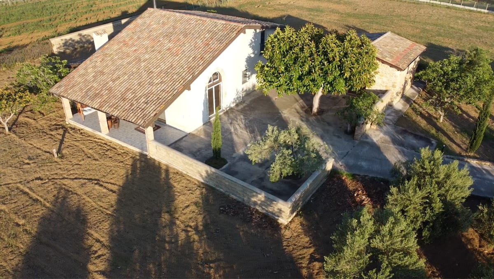
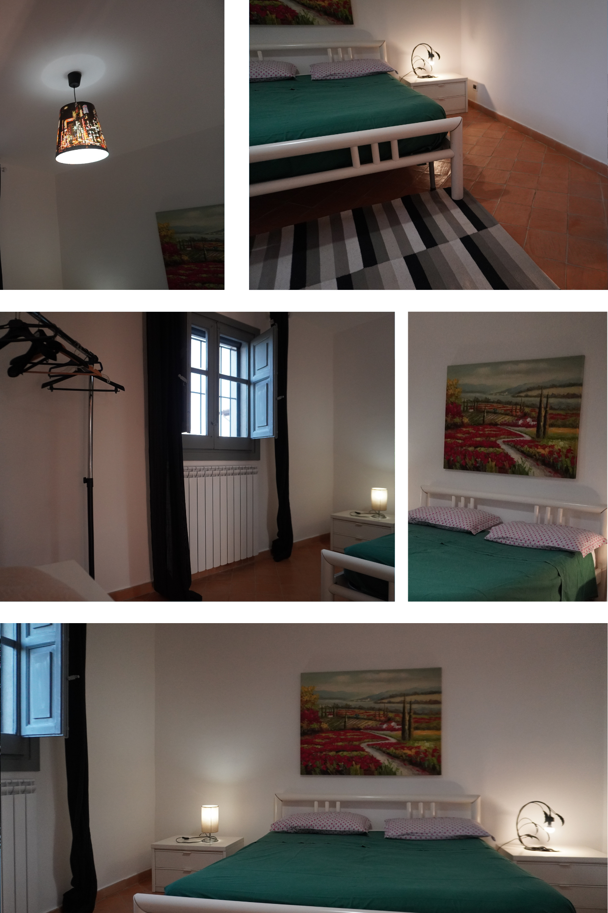

Chi Siamo
Cottage Siciliano da favola! Composto da un vasto salone con tetto in legno, con open space sulla cucina, camere accoglienti e bagni completi. All’esterno: ampia veranda con vista su un terreno coltivato, parcheggio privato, e il nostro amato forno a legna per preparare pizze o pane in compagnia. Siamo a metà strada tra il mare e il centro abitato, in una zona tranquilla ma accessibile. Ideale per famiglie, coppie o gruppi di amici che cercano un’esperienza autentica, rilassante e genuina.
